HeaderHeader
The animated smiley greets on every screen, next to the language switch and the account.El smiley animado saluda en cada pantalla, junto al selector de idioma y la cuenta.
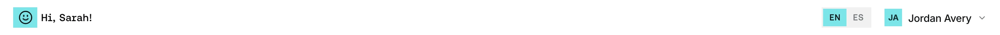
A UX/UI challenge for Strike, a cybersecurity platform: one guided flow to create a security exercise across many assets, with shared settings and exceptions per asset, delivered as a working prototype.Un challenge de UX/UI para Strike, una plataforma de ciberseguridad: un flujo guiado para crear un ejercicio de seguridad sobre varios assets, con configuración compartida y excepciones por asset, entregado como prototipo funcional.
Strike manages the assets that take part in a security test one by one. Its clients, though, need to assess several related assets inside the same coordinated exercise.Strike gestiona de forma individual los activos que forman parte de una prueba de seguridad. Pero sus clientes necesitan evaluar varios activos relacionados dentro de un mismo ejercicio coordinado.
The brief: a single experience that coordinates testing across many assets without adding needless complexity, and without losing control over how each one is set up.El pedido: una experiencia única que coordine las pruebas sobre muchos activos sin sumar complejidad innecesaria y sin perder el control sobre cómo se configura cada uno.
For example, a security assessment of an e-commerce can involve a website, a mobile app and an API. They belong to the same ecosystem, yet each one can need different credentials, request limits, VPN access and test restrictions.Por ejemplo, la evaluación de seguridad de un e-commerce puede involucrar un sitio web, una app móvil y una API. Son parte del mismo ecosistema, pero cada uno puede necesitar credenciales, límites de solicitudes, acceso por VPN y restricciones de pruebas diferentes.
The problem isn’t picking several assets. It’s handling shared settings and individual exceptions in one flow that scales.El problema no es elegir varios activos. Es manejar la configuración compartida y las excepciones de cada uno en un solo flujo que escale.
Some parameters apply to the whole exercise: the objective, the testing depth and the schedule. Others belong to each asset: credentials, request limits, VPN and excluded tests. Mixed together, it’s hard to tell what affects everything and what affects one asset.Algunos parámetros aplican a todo el ejercicio: el objetivo, la profundidad de las pruebas y el cronograma. Otros son de cada activo: credenciales, límites de solicitudes, VPN y pruebas excluidas. Mezclados, cuesta entender qué afecta a todo y qué a un solo activo.
A flow that works with two or three assets turns slow with 20 or 40. Opening and setting each one by hand repeats work, invites errors and hides what’s still incomplete.Un flujo que funciona con dos o tres activos se vuelve lento con 20 o 40. Abrir y configurar cada uno a mano repite trabajo, suma errores y esconde lo que quedó incompleto.
Incomplete settings and differences between assets have to show up before any test starts.Las configuraciones incompletas y las diferencias entre activos tienen que aparecer antes de que empiece cualquier prueba.
Before any screen, a five-page deck in Figma framed the problem, broke it down and proposed the flow.Antes de cualquier pantalla, un deck de cinco páginas en Figma planteó el problema, lo desglosó y propuso el flujo.
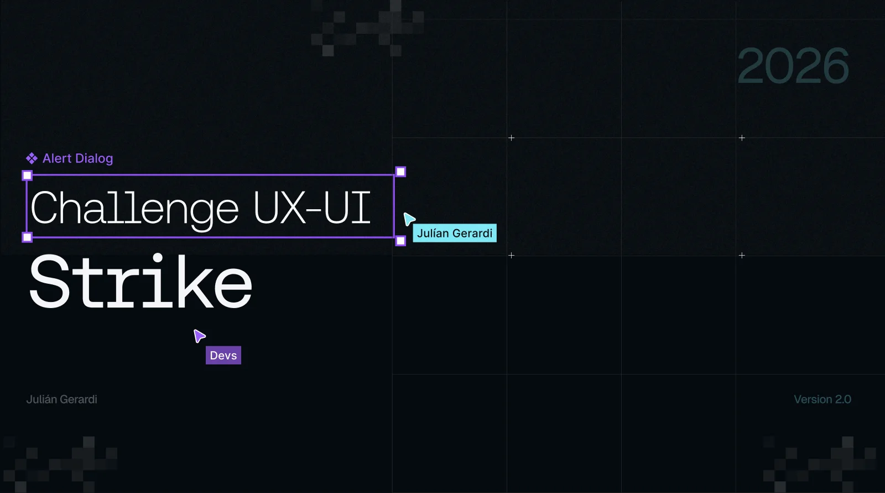
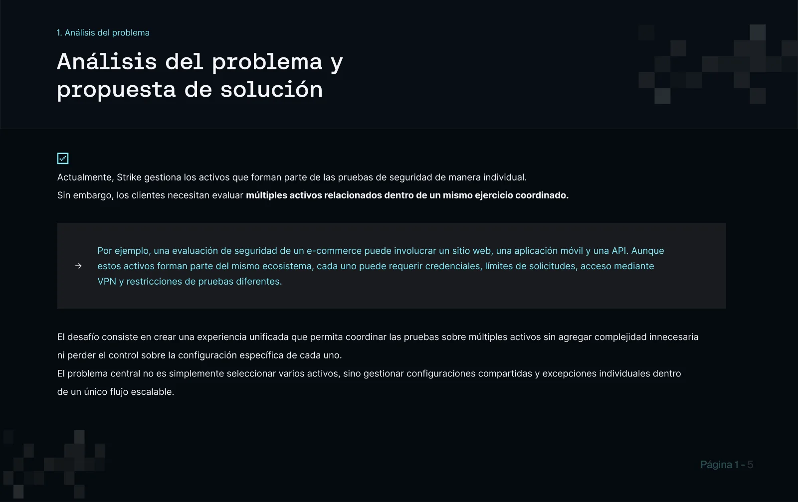
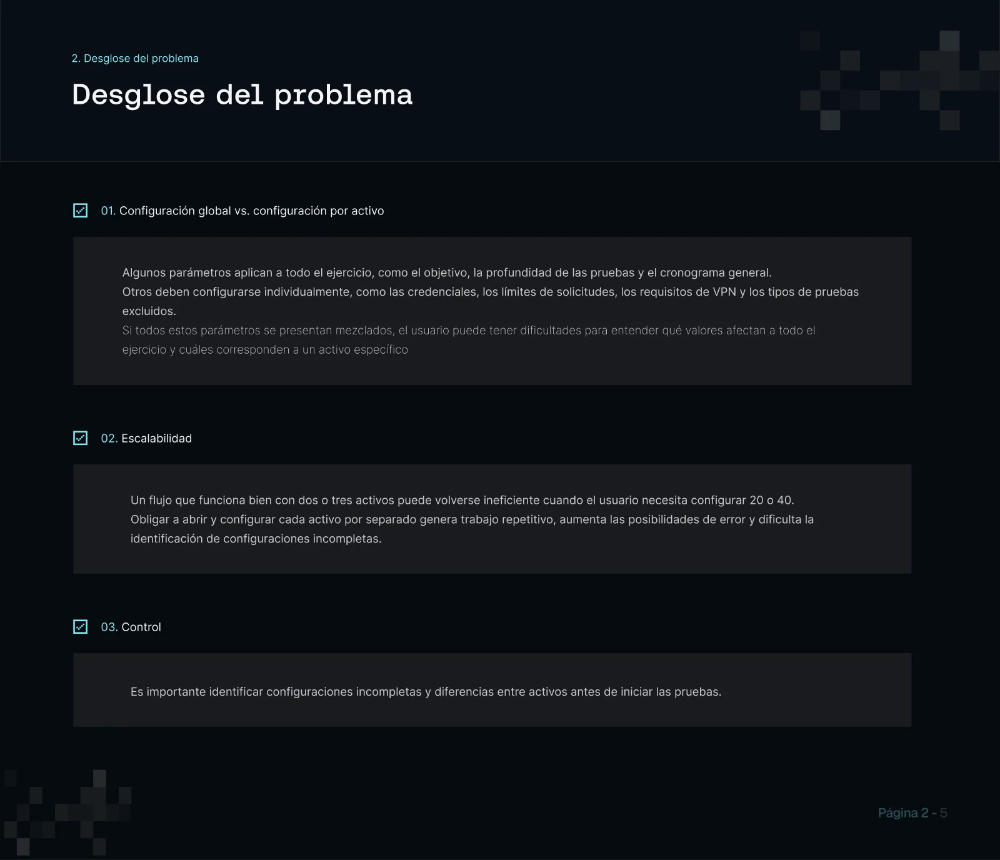
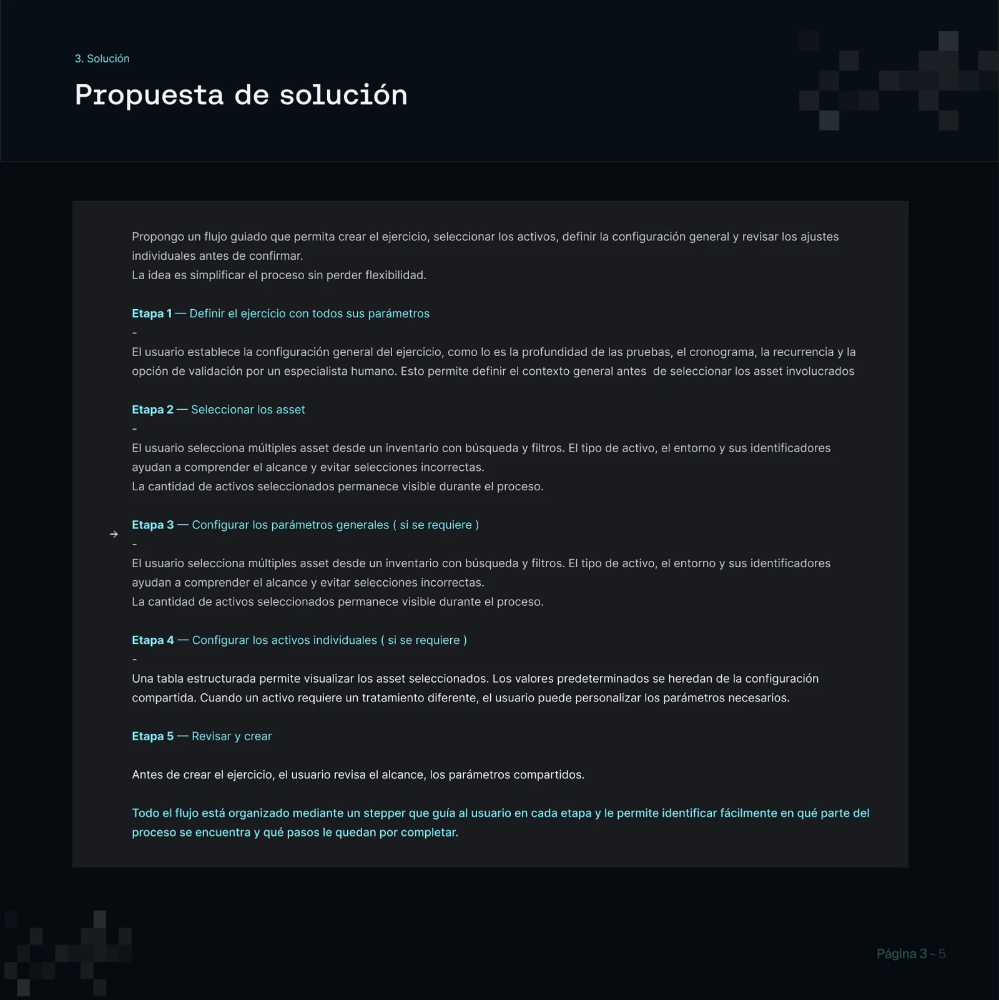
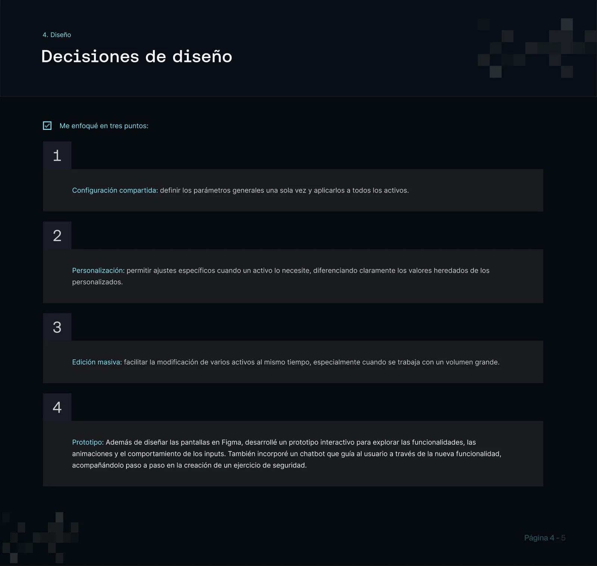
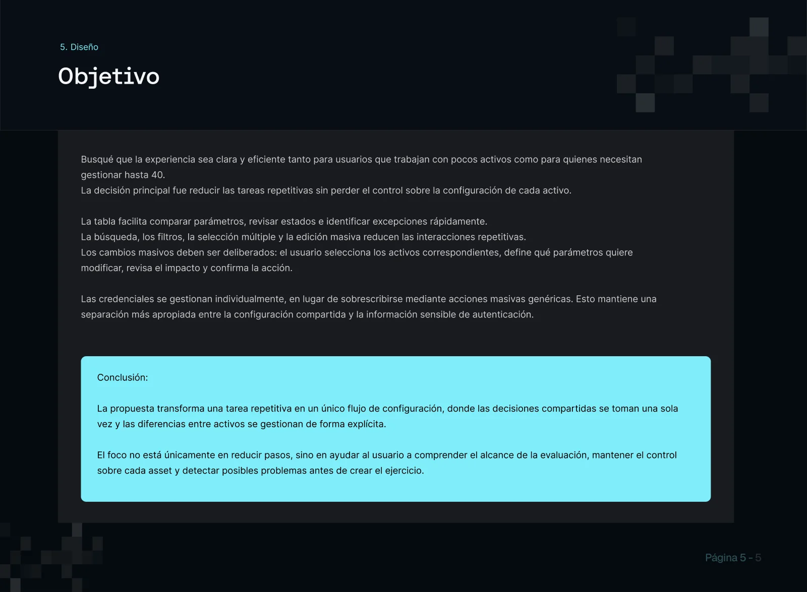
Every screen of the happy path went through three passes in Figma. Here is the same one, Configure assets, in each.Cada pantalla del happy path pasó por tres instancias en Figma. Acá está la misma, Configure assets, en cada una.
Structure only: the stepper, the exercise defaults on top, the table and the actions. No copy, no colour.Solo estructura: el stepper, los valores del ejercicio arriba, la tabla y las acciones. Sin textos ni color.
Real copy and real data in greyscale, to check that every column and every label reads before any styling.Textos y datos reales en escala de grises, para comprobar que cada columna y cada etiqueta se lean antes de cualquier estilo.
Strike’s cyan marks what is selected and what is active; types get their own colour so a long list scans by kind of asset.El cian de Strike marca lo seleccionado y lo activo; los tipos tienen su propio color, así una lista larga se recorre por tipo de activo.
A stepper keeps the whole flow in view: where you are and what’s left. Simpler, without losing flexibility.Un stepper mantiene a la vista todo el flujo: dónde estás y qué falta. Más simple, sin perder flexibilidad.
Name, objective, testing depth, dates, recurrence and the option of a human specialist: the general context comes first, before choosing any asset.Nombre, objetivo, profundidad, fechas, recurrencia y la opción de un especialista humano: primero el contexto general, antes de elegir cualquier activo.
An inventory with search and filters. Type, environment and identifier help to get the scope right, and the count stays in sight.Un inventario con búsqueda y filtros. El tipo, el entorno y el identificador ayudan a acertar el alcance, y la cantidad elegida queda a la vista.
Select several assets and edit them together: for each field, keep it, apply a new value or reset it to the exercise default.Elegir varios activos y editarlos juntos: en cada campo, mantenerlo, aplicar un valor nuevo o volver al valor del ejercicio.
Each asset inherits the exercise’s values. When one needs something different, its drawer sets a custom value, marked as an override.Cada activo hereda los valores del ejercicio. Cuando uno necesita algo distinto, su panel define un valor propio, marcado como excepción.
Scope, shared settings and every exception on one page, with a readiness check before creating. Creating doesn’t start any test.El alcance, la configuración compartida y cada excepción en una página, con un chequeo de que todo esté listo antes de crear. Crear no inicia ninguna prueba.
The summary of the exercise, and back to the list, where the new one shows at the top.El resumen del ejercicio, y de vuelta al listado, donde el nuevo aparece arriba.
The exercise defaults sit above the table: depth, human validation, dates and the testing window. Every asset starts from them, so the table only has to show what’s different.Los valores del ejercicio quedan arriba de la tabla: profundidad, validación humana, fechas y ventana de prueba. Cada activo parte de ellos, así la tabla solo tiene que mostrar lo distinto.
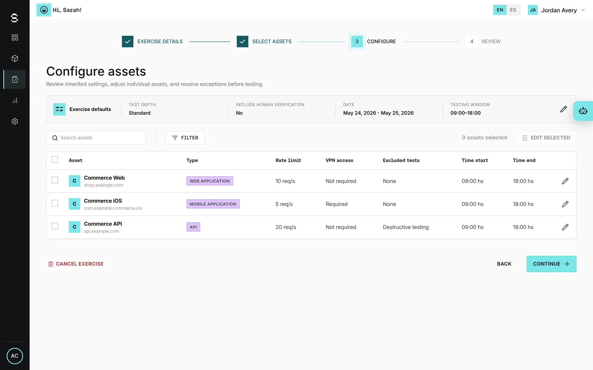
In an asset’s drawer every field says whether it inherits the default, with the value in brackets, or has its own. The review lists each exception per asset.En el panel de un activo cada campo dice si hereda el valor del ejercicio, con el valor entre paréntesis, o si tiene uno propio. La revisión lista cada excepción por activo.
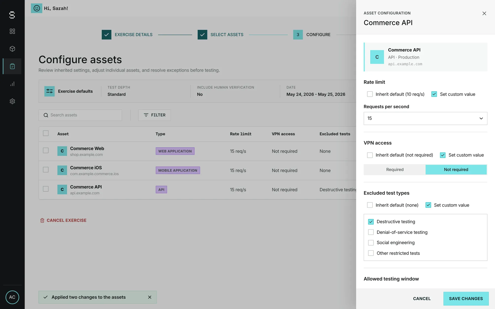
Select the assets, choose which fields to change, see the impact and confirm. Credentials are never part of a bulk change: they stay with each asset, apart from the shared settings.Elegir los activos, definir qué campos cambiar, ver el impacto y confirmar. Las credenciales nunca entran en un cambio masivo: quedan en cada activo, separadas de la configuración compartida.
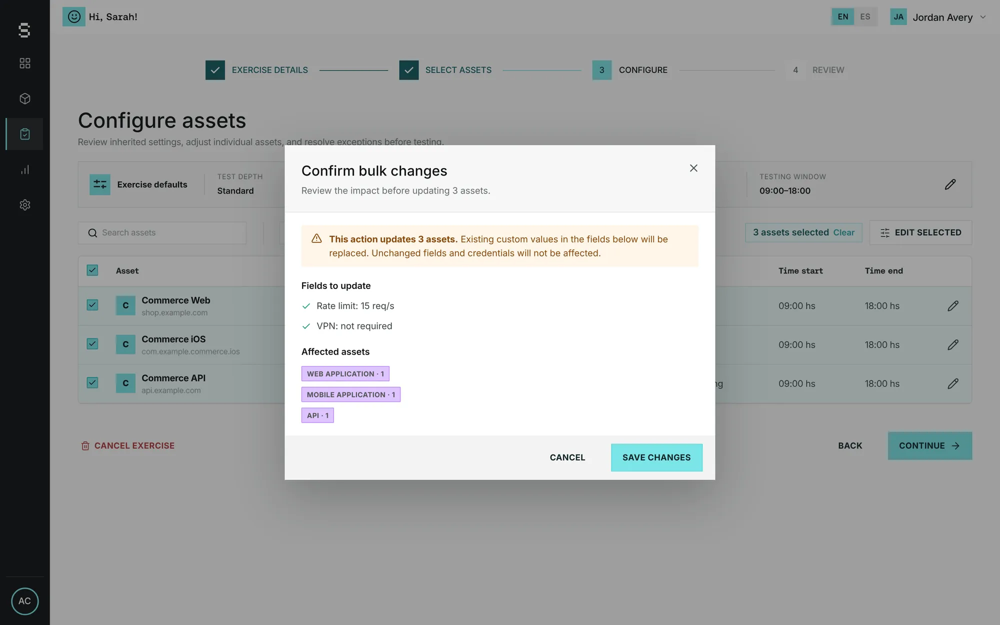
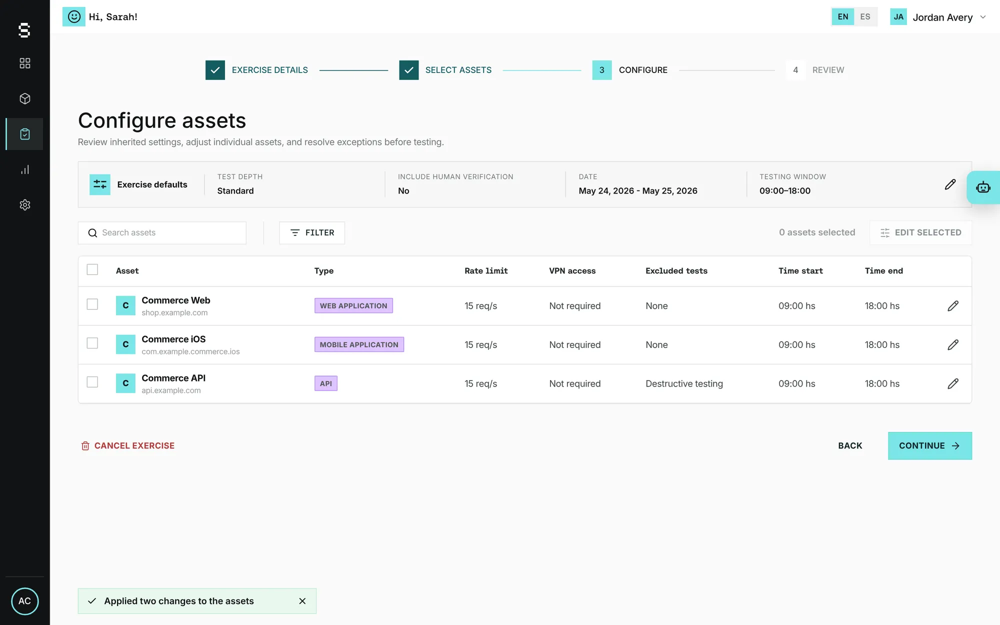
The form starts empty and says exactly what is missing. Before creating, a readiness panel counts the assets reviewed, missing setup, schedule issues and custom exceptions.El formulario arranca vacío y dice exactamente qué falta. Antes de crear, un panel cuenta los activos revisados, la configuración faltante, los problemas de agenda y las excepciones.
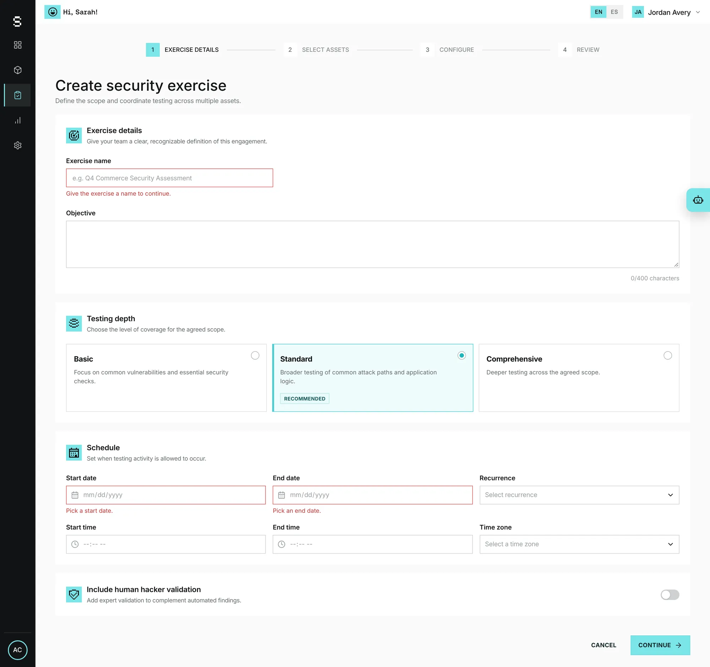
The confirmation sums the exercise up, and the list shows the new one first, so the person sees it landed.La confirmación resume el ejercicio, y el listado muestra el nuevo primero, así la persona ve que quedó creado.
Besides the screens in Figma, I built the flow as a working prototype with Claude Code, in React, to try the features, the animations and how every input behaves.Además de las pantallas en Figma, construí el flujo como un prototipo funcional con Claude Code, en React, para probar las funcionalidades, las animaciones y el comportamiento de cada input.
It includes Strike Bot, an assistant that walks the person through the new feature: it explains how to create an exercise and how to apply settings to the assets, and starts a tour that highlights the exact control of each step. The prototype also works in English and Spanish, and on phones, tablets and desktop.Incluye a Strike Bot, un asistente que acompaña a la persona en la funcionalidad nueva: explica cómo crear un ejercicio y cómo aplicar la configuración a los activos, y arranca un tour que resalta el control exacto de cada paso. El prototipo además funciona en inglés y en español, y en celular, tablet y desktop.
Two questions cover the feature. Each answer can turn into a 15-step tour that waits for the person to click the highlighted control.Dos preguntas cubren la funcionalidad. Cada respuesta puede convertirse en un tour de 15 pasos que espera a que la persona haga clic en el control resaltado.
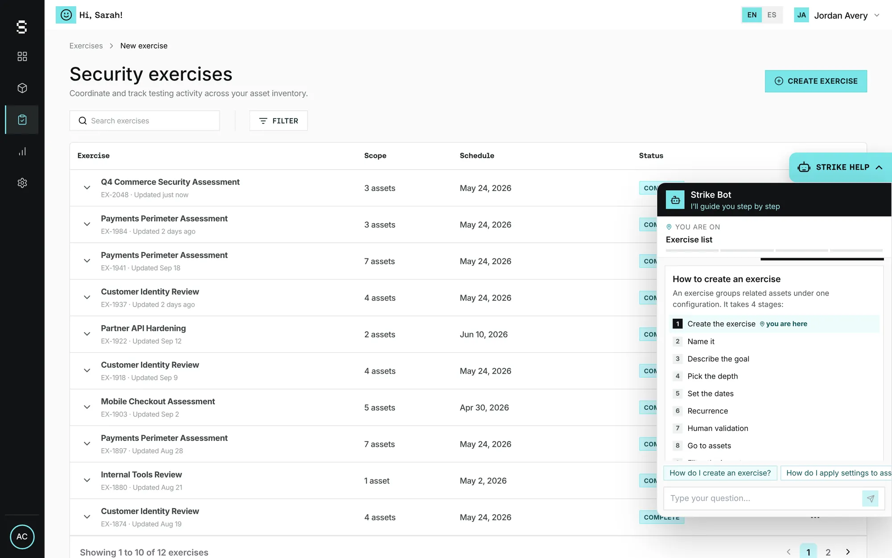
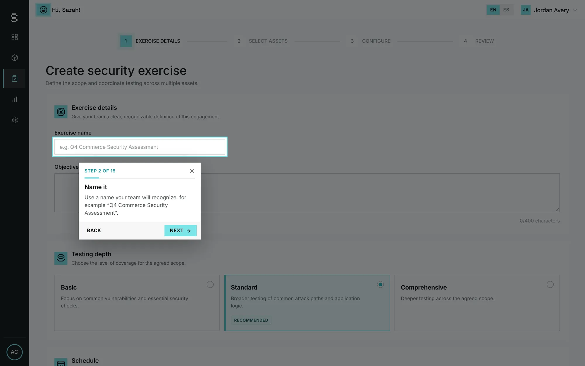
Tables keep their columns and scroll sideways, dialogs and drawers fill the screen, and the stepper shrinks to numbers.Las tablas mantienen sus columnas y se desplazan de costado, los diálogos y paneles ocupan la pantalla y el stepper se reduce a números.
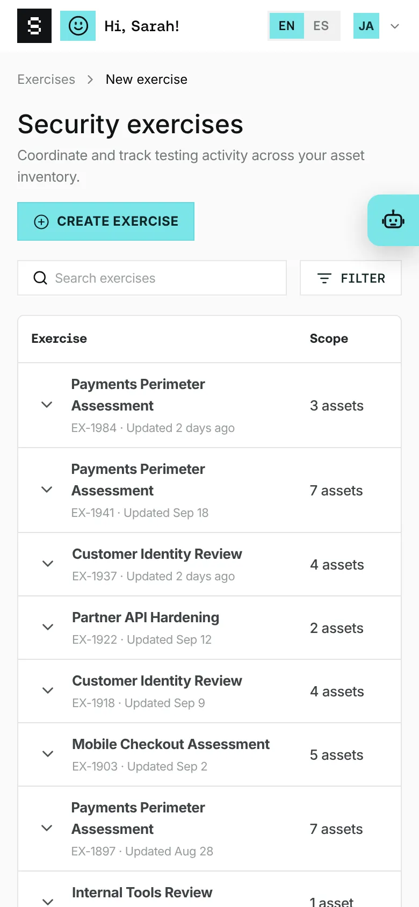
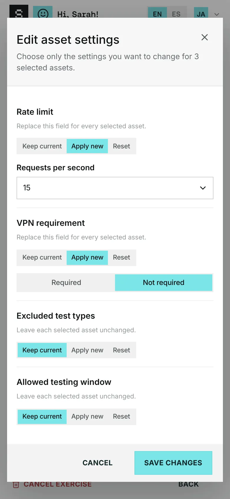
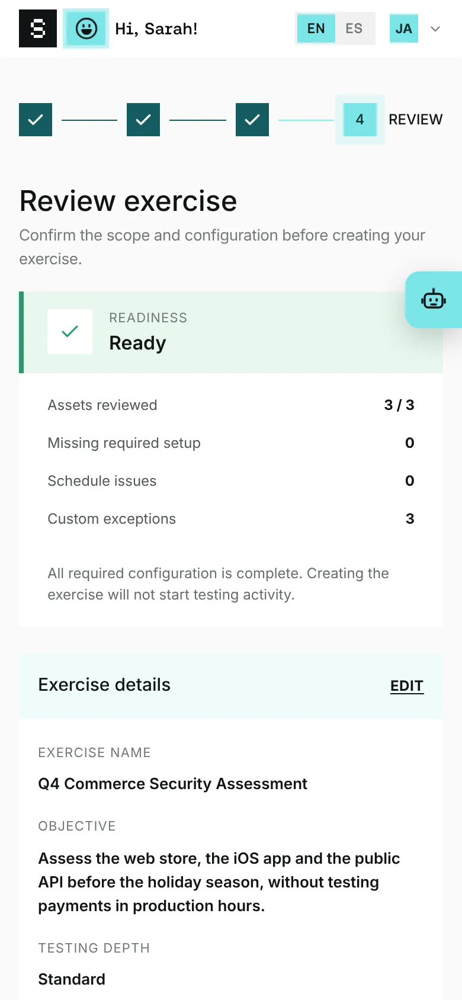
The Figma file has its own design system page: colours, type, header, sidebar, steppers, buttons, badges, fields and tables, each with its variants. The pieces from Figma are shown as exported; the interactive ones come from the prototype at 2x.El Figma tiene su propia página de design system: colores, tipografía, header, sidebar, steppers, botones, badges, campos y tablas, cada uno con sus variantes. Las piezas del Figma se muestran tal como se exportaron; las interactivas salen del prototipo a 2x.
Open the design system in FigmaAbrir el design system en FigmaThe animated smiley greets on every screen, next to the language switch and the account.El smiley animado saluda en cada pantalla, junto al selector de idioma y la cuenta.

Four steps and a completed state: the current one in cyan, the done ones checked in teal.Cuatro pasos y un estado completo: el actual en cian, los terminados con check en verde azulado.
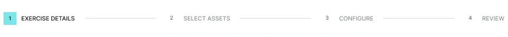
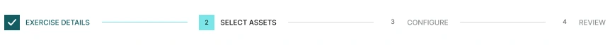
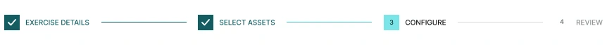
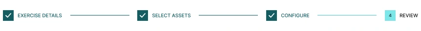
Every field of an asset inherits the exercise default, with the value in brackets, or takes its own.Cada campo de un activo hereda el valor del ejercicio, con el valor entre paréntesis, o toma uno propio.
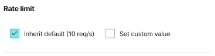
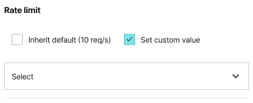
Custom opens a two-option switch.El valor propio abre un selector de dos opciones.
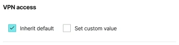
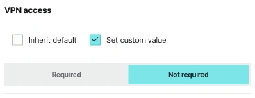
Custom opens the list of tests that can be excluded.El valor propio abre la lista de pruebas que se pueden excluir.
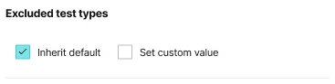
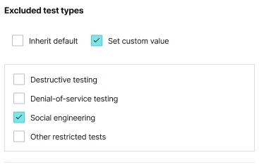
Custom asks for its own start and end time.El valor propio pide su propia hora de inicio y de fin.
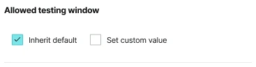
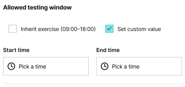
Selects and time pickers: empty with a hint, open with the cyan border.Selects y selectores de hora: vacíos con una pista, abiertos con el borde cian.
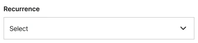
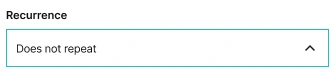
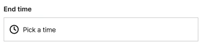
Status in cyan and green, asset types in violet, and one primary action per screen.Los estados en cian y verde, los tipos de activo en violeta y una sola acción principal por pantalla.
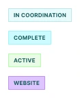
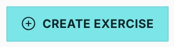
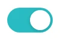
Three options as cards, with the recommended one marked.Tres opciones como cards, con la recomendada marcada.
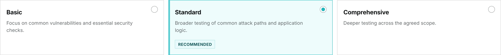
The shared settings, one line above the table, with an edit button.La configuración compartida, en una línea arriba de la tabla, con un botón para editar.
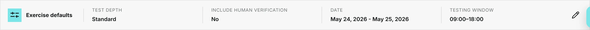
Each field chooses between keeping, applying a new value or resetting; only “Apply new” opens the editor.Cada campo elige entre mantener, aplicar un valor nuevo o volver al del ejercicio; solo “Aplicar nuevo” abre el editor.
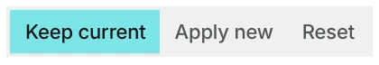
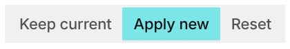
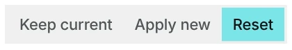
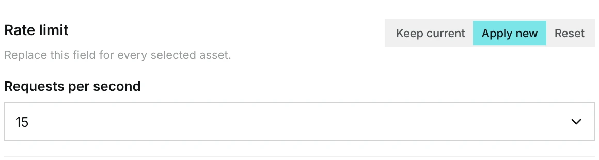
The impact before saving, and a short toast after.El impacto antes de guardar, y un aviso corto después.
Exercises that expand to show their assets and configuration, the asset inventory and the configuration table, each selected and not.Ejercicios que se despliegan con sus activos y su configuración, el inventario de activos y la tabla de configuración, cada una con y sin selección.
What’s left before creating, counted.Lo que falta antes de crear, contado.
The chat and the tour card that points at each control.El chat y la card del tour que señala cada control.
The summary card, and the new row highlighted in the list.La card de resumen, y la fila nueva resaltada en el listado.
Shared decisions are made once and the differences between assets are handled explicitly. The focus isn’t only on fewer steps: it’s on helping people understand the scope of the assessment, keep control of each asset and catch problems before the exercise is created.Las decisiones compartidas se toman una sola vez y las diferencias entre activos se manejan de forma explícita. El foco no está solo en reducir pasos: está en ayudar a entender el alcance de la evaluación, mantener el control de cada activo y detectar problemas antes de crear el ejercicio.